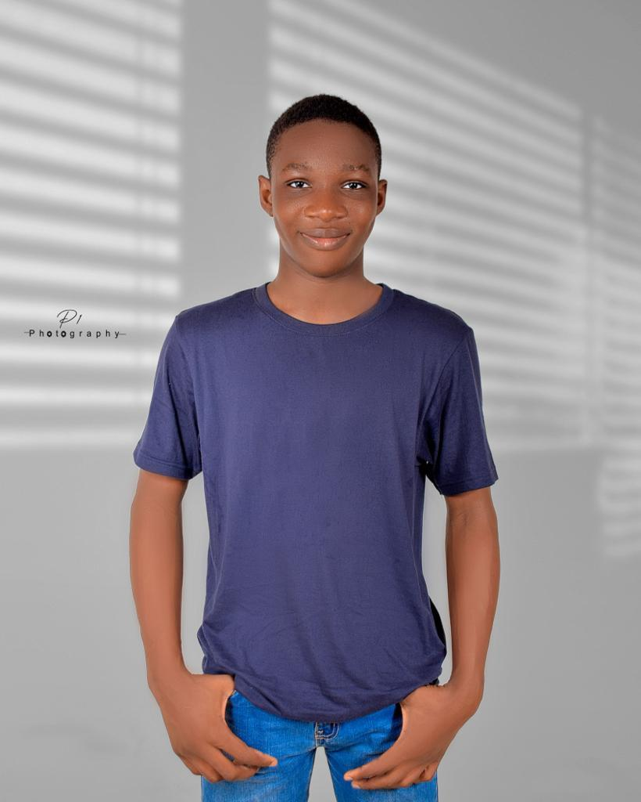

Adekunle Adewale John
About Me
Hello! I'm a web development enthusiast from Nigeria. I enjoy building dynamic and accessible web applications. I love sharing knowledge and learning new technologies.
My Interests

I love exploring the outdoors, learning new frameworks, and collaborating on creative web projects.
Weather in Lagos
Temperature: 40°F
Wind Speed: 10 mph
Wind Chill: